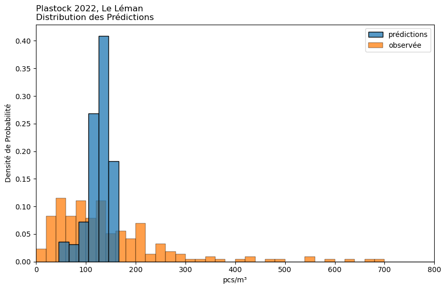
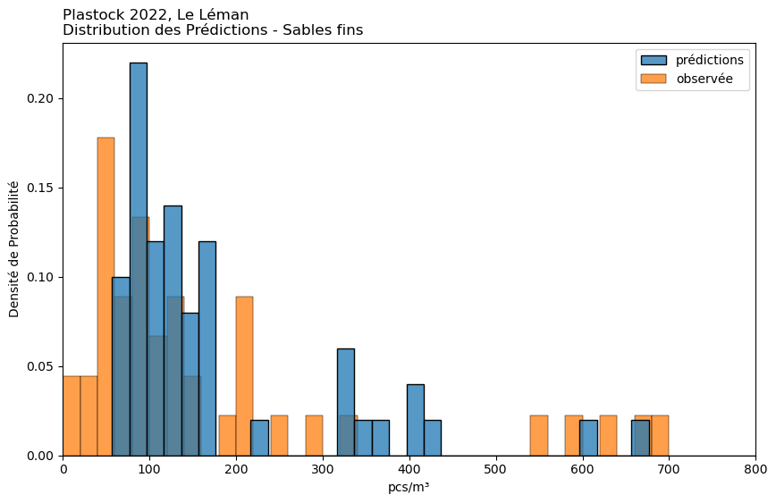
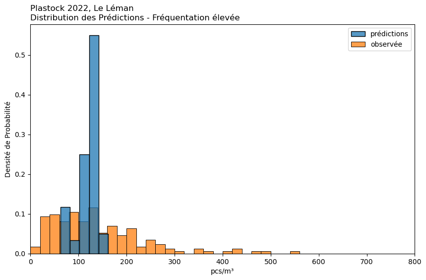
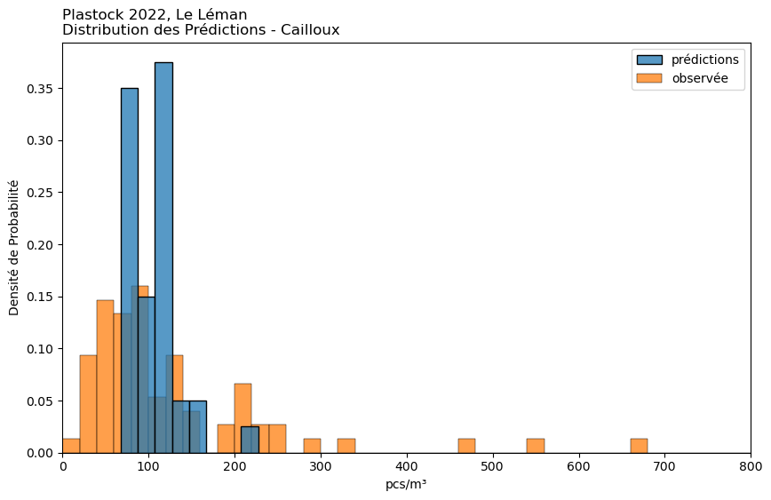
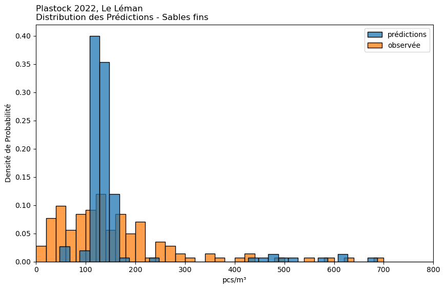
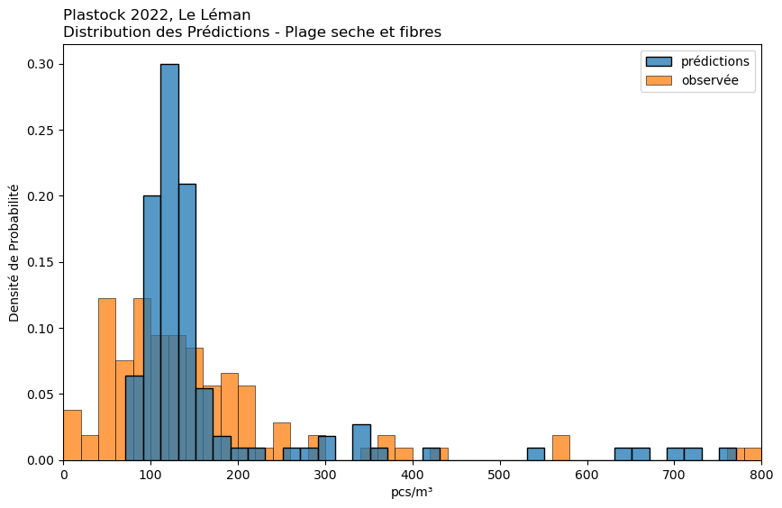
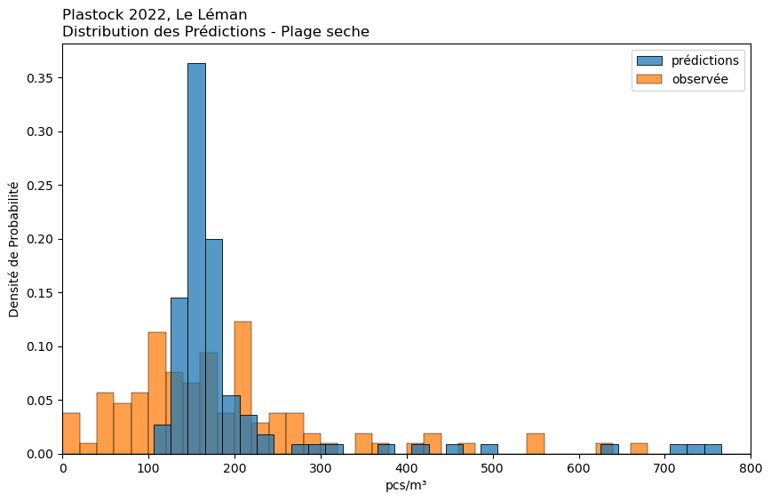
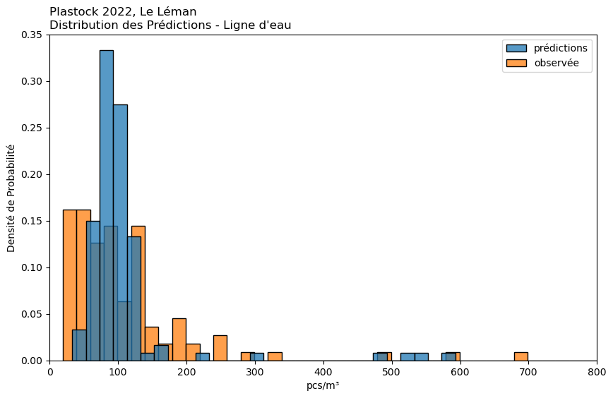

2. Micros particules#
Format
Le format suit celui de l’annexe pour les microplastiques . Nous incluons également l’analyse utilisant des variables combinées selon la méthode décrite dans la section Résultats précédents.
Le système de mesure.
Dans cette section, les unités sont le nombre de particules par conteneur. Le récipient a des côtés de 10 cm X 10 cm X 5 cm ou 0,0005 m³.
2.1. Résultats#
Résultats
Min
0
25%
70
50%
121
75%
198
Max
2'991
Moyenne
180
Écart-type
267
Échantillon
217
Total
39'089
Desrciptive
Table MP-1 : Distribution des résultats de l’ensemble de l’échantillons Plastock.

2.1.1. Autres études#
2.1.3. Random Forest#
Source : scikit-learn random forest
criterion : absolute error
La régression avec forêt aléatoire est une technique d’apprentissage automatique (machine learning) utilisée pour prédire des résultats continus (par opposition aux catégories dans la classification). C’est une méthode d’apprentissage ensembliste, ce qui signifie qu’elle combine les prédictions de plusieurs algorithmes d’apprentissage automatique pour produire des prédictions plus précises.








observée
prédiction
1%
0
56
25%
70
117
50%
121
131
75%
198
143
99%
1'060
161
Moyenne
180
127
Les modèles ont fait l’objet d’un bootstrap, 100 itérations pour chaque scénario. Les résultats estimés sont la collection de toutes les prédictions de chaque itération.
Par exemple, le tableau intitulé “Gravier” présente les résultats observés et prévus pour les plages ayant un substrat de 3 ou 4.
observée
prédiction
1%
8
57
25%
59
88
50%
113
126
75%
200
163
99%
1'982
641
Moyenne
233
176
observée
prédiction
1%
0
62
25%
72
110
50%
124
124
75%
194
134
99%
1'006
152
Moyenne
166
119
observée
prédiction
1%
15
67
25%
60
81
50%
90
107
75%
185
123
99%
1'882
208
Moyenne
207
106
observée
prédiction
1%
0
51
25%
78
121
50%
130
130
75%
200
143
99%
807
618
Moyenne
166
157
observée
prédiction
1%
0
87
25%
78
111
50%
124
127
75%
187
141
99%
882
726
Moyenne
191
172
observée
prédiction
1%
0
121
25%
105
156
50%
170
164
75%
238
193
99%
1'471
1'159
Moyenne
246
250
observée
prédiction
1%
20
43
25%
54
74
50%
85
92
75%
129
112
99%
687
542
Moyenne
117
110
Git repo: https://github.com/hammerdirt-analyst/plastock.git
Git branch: main
seaborn : 0.12.2
matplotlib: 3.7.1
pandas : 2.0.0
numpy : 1.24.2